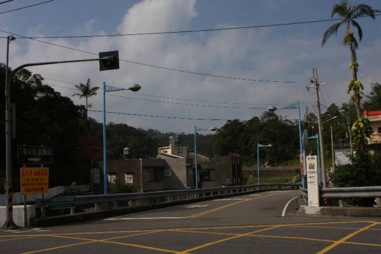

Course Description
New Taipei City Marathon Association, one of the most active jogging clubs also known as a pioneer promoting marathon in Taiwan, will hold marathon race in the beautiful township of Shuang-xi again on Feb. 19 (Sun), 2012. This will be the 24rd marathon/ultra marathon race the association has organized in the past decade. With its proven expertise and passion in race organization and sponsorship, as well as full support from Shuang-xi Dist. Administrative Office, the association is committed to making the event one that grants both the runners and the local community great encountering and unmatched experience.
The race course follows "Shuang-tai Pathway", crossing the county border of Taipei and I-lan, before reaching turnaround point.
"Shuang-tai Pathway", also known as "Cherry Blossom Boulevard" with numerous cherry trees planted by the administrative office along the pathway, connects the township center to Tai-pin, a remote village hidden in mountains of 500 meters above sea level where Hsin-tien River originates. From the village the pathway continues to stretch along the upper stream of Hsin-tien River, before reaching the county border, which is already 19 KM away from its start at the center of Shuang-xi Township. Thus, runners have to cross the border, entering into I-lan County for around 1 KM before reaching the turnaround point (21.095 K point).
Section 1: START → 8K (“Lan Pin Chien Li” Stele)
The Start of this race is Shuang-xi Elementary School. A school with more than 110 years standing by Shuang-xi Stream, it witnesses the growth of this old township.
Waving good bye to the school, running along Dong-jun Street, immediately you'll meet Gong-he Bridge, the most modern bridge of Shuang-xi Township. Crossing the bridge and then turning right, you are on Jhong-shan Rd. Then, you reach the entrance of Shuang-tai Pathway. Turn left, and the journey begins.

Around 800 meters after turning into the Pathway, you will have to face a long slope for 8 km, climbing from 90 m to around 500 m. The first 4 km might be the most difficult, since there is no flat road but just keep going up and up with 8 zigzag curves.
From 4 km to 8 km, you will get the chance to adjust yourself, for some flat, and even downhill road will pop up in front of you. In addition to the Cherry Blossom trees, you may also find the rhododendrons beside the road.

At around 7.5 K, you'll see a Chinese tablet. This is a memorial tablet for an ancient path “Resignation Hill Footway”.

"Resignation Hill"?
The story goes like this: in 1971, a teacher, just graduated from college, was travelling to Tai-pin Elementary school in Tai-pin village for his first assignment there. At that period of time, there was no "Tai-pin Pathway". To enter into Tai-pin, the only choice was walking through the footway, and so he did. By the time he reached here (where the memorial tablet stands today), he was so exhausted that he almost couldn't move any more, but he only finished half of his traveling! Feeling how "difficult" his life would be in around three or five years, he decided to go back to Taipei and resign from the job.
So is the name of this hill and this ancient footway.
Moving forward around 500 m, you'll meet "Lan Pin Chien Li" Stele, the second highest point along the course. If you have another chance to be here, don't forget to get on the ladder for the gazibo. When it is sunny, you may see the Pacific Ocean from the gazibo.

However, I recommend you not to linger here on the race day, or you might be caught by the great view and forget the race!
Section 2: 8K → 13K (Entrance of Shou-shan Temple)
Waving to the stele, you'll enjoy the comfortable downhill for 1 K. Now we get here. Tai-pin Village, a place accompanied by the clear stream and fresh green mountains. If you are still o.k., don't forget to see and feel the pureness, simplicity and tranquility that is simply unparalleled in the neighborhood of Taipei.


In this section, you'll have to face some short uphill and downhill, but they are not that long. Don't worry.
Seeing the sign of Chung-hwa Telecom, you are approaching the most famous scenic area in this village: "Hu Bao" Lake, literally meaning "Lake of Tiger and Leopard". This name was given not because there were really tigers and leopards, but because the shape of the mountain around the stream looks just like a tiger and a leopard.

Where you'll pass by is just the entrance of this Lake. If you are fond of this place, you may plan a trip here in summer. This is a popular place during the hot days, since the tourists can freely enjoy the fresh cool water here.

Moving forward, you will see the entrance of the already abandoned Tai-pin Elementary School, and then Tai-pin Police Substation, as well as a grocery store – the only one along the entire pathway.
Crossing a bridge, a gate of a temple stands on your left side. This is the entrance of Shou-shan Temple. Congratulations! You've finished another section!

Section 3: 13K → 21K (Turnaround Point)
Leaving Shou-shan Temple behind, the Pathway begins to go uphill again.
The slope is not that steep, though, but you might feel a bit annoying. Try to control yourself. Don't waste too much of your energy in this section.
At around 17.5K, you'll meet an intersection. The Pathway turns left. If you take the road straight ahead, you'll go astray. This straight road will lead you to a camping site "Wan Tan". Don't be nervous. Just follow other runners and you are on the right way!
Another stele stands at 19K, the border of Taipei County and I-lan County.

Just go ahead, and you'll get to the highest point of the whole course.
The destination of this Pathway is “Da-si”, a fishing village of Tou-chen Township which belongs to I-lan County. But we won't take you that far (another 10 km from the border to the village!). Don't forget to view the magnificent mountain on your left side. Deep valley. High mountain. I hope that won't take your breath away.
Going Back: The Road for Trial and Victory
Taking the wristlet as a proof for finishing half course, you get on the way back to Shuang-xi High school.
From 21K to 29K, most of the time you'll enjoy the downhill. However, remember not to push yourself too much. You still have a long way to go. From 29K to 33K, several uphill and downhill are waiting for you.
The most difficult section, according to the participants in 2009, is from 33K to 34K. You need to conquer a long and steep slope when you are a bit exhausted. Please keep encouraging your legs and your will. Trust yourself: “Yes, I can!”
34K, congratulations! Seeing “Lan Pin Chien Li” Stele again means you've passed the trial!
From 34K to 41K, the downhill road will ease your mind. Enjoy yourself!
After the long descending, you reach the entrance again. But this time, you'll turn left. Passing the gate of Shuang-xi Senior High School, crossing Tai-pin Bridge, you'll run on Tai-pin Rd. and Da-tun Rd, the "business center" and religious center of downtown Shuang-xi. The citizens here, I believe, would give you a big hand when you pass by. Exhausted though, don't forget to give them your charming smile.
Passing by a temple and the Government Office, you'll soon reach Shuang-xi Elementary school. We are here, waiting for your glorious victory!

Congratulations! You've completed another marathon. Receiving the Finishing Medals and picking up your Record Certificate, you may freely have a chat with the local runners and residences around you, or wandering in the street of Shuang-xi, giving your soul and body a pure and calm rest.
We sincerely hope you would enjoy this trip and the scenery of Shuang-xi!